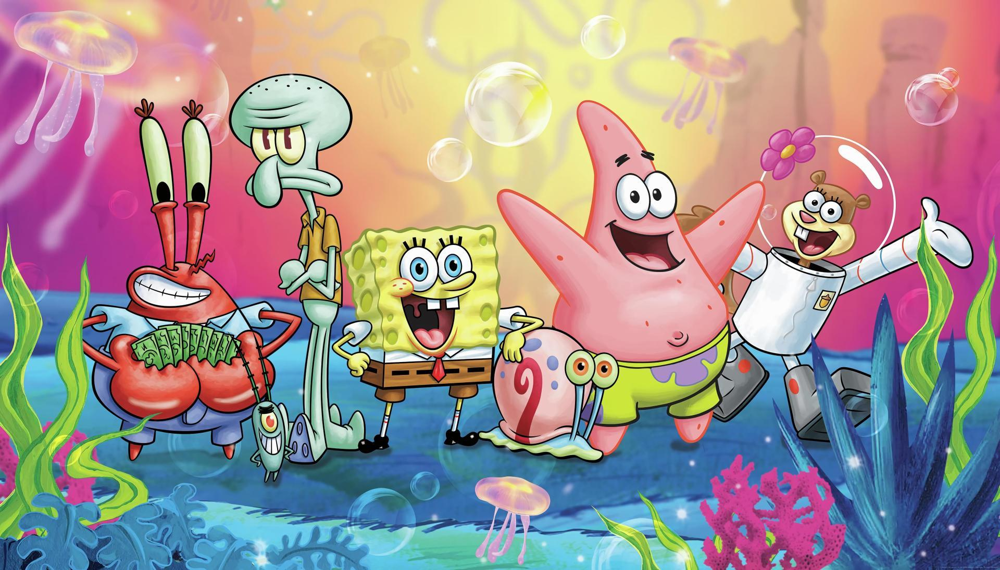
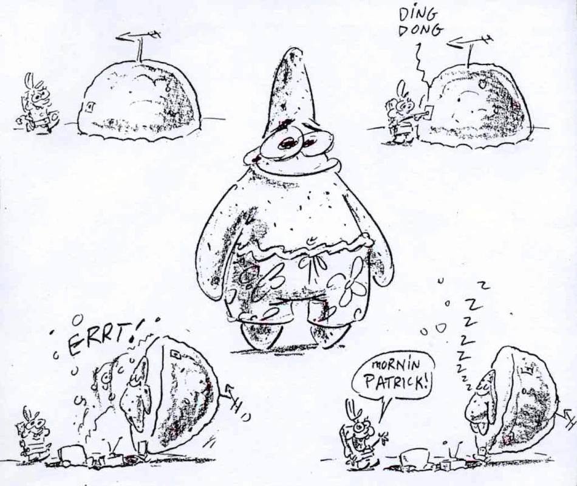
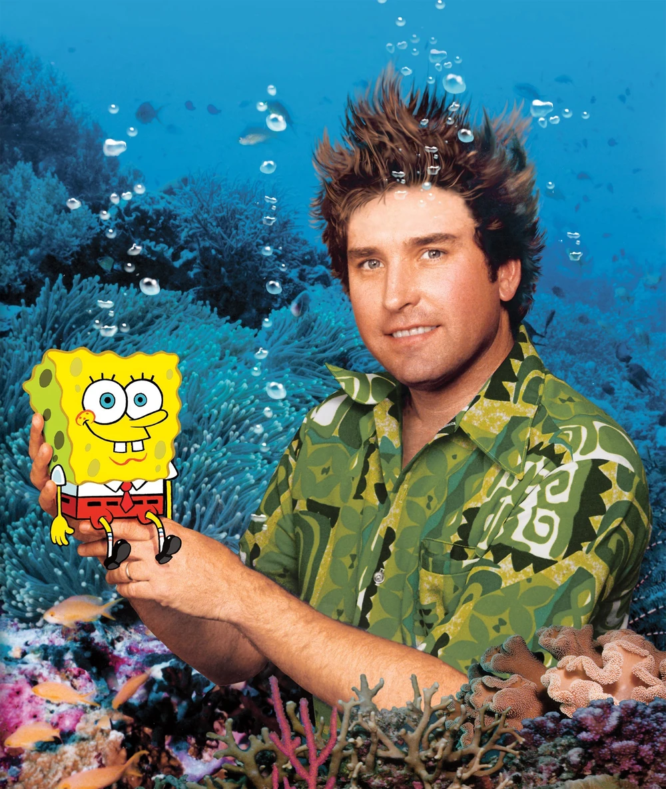

• ┈ ┈ ┈ 《海綿寶寶》作品簡介 ┈ ┈ ┈ •

是一部美國動畫電視劇，類型屬於喜劇/荒誕喜劇/動畫情景劇。
自1999年起在美國尼克兒童頻道開播至今已經超過20年，廣受全球小朋友歡迎，
迄今已推出過三部電影《海綿寶寶電影版》《海綿寶寶 : 海陸大出擊》和《海綿寶寶 : 奔跑吧》，
2017年首演其同名舞台劇，近年更推出了衍伸影集《珊瑚營 : 海綿寶寶那些年》和《派大星秀》。
劇情主要圍繞一隻樂觀、天真、充滿活力的海綿寶寶(SpongeBob)，他住在海底城市「比奇堡(Bikini Bottom)」裡的一個鳳梨屋， 養了一隻寵物蝸牛叫 小蝸(Gary)。海綿寶寶在當地一家名為"蟹堡王"的快餐店擔任煎堡師傅，他熱愛自己的工作。
劇情主要圍繞一隻樂觀、天真、充滿活力的海綿寶寶(SpongeBob)，他住在海底城市「比奇堡(Bikini Bottom)」裡的一個鳳梨屋， 養了一隻寵物蝸牛叫 小蝸(Gary)。海綿寶寶在當地一家名為"蟹堡王"的快餐店擔任煎堡師傅，他熱愛自己的工作。
• ┈ ┈ ┈ 創作者與理念 ┈ ┈ ┈ •
該劇的創作者是 Stephen Hillenburg，他原本是海洋生物學家兼藝術家/動畫人。
在他擔任海洋教育者期間，就以「潮間帶」為主題繪製教學漫畫《The Intertidal Zone》，那本漫畫中就已有名為 “Bob the Sponge” 的角色，
是後來海綿寶寶的原型。
他後來進入加州藝術學院（CalArts）的實驗動畫課程進修，獲得動畫製作的相關訓練。 在他擔任動畫師 / 導演的過程中，他曾參與《Rocko’s Modern Life》（洛可的現代生活）等動畫，從中累積經驗。 在該作品完成後，他便以其對海底生物的認識與對動畫的美學感，開始構思將角色與海洋環境做融合，講述海底社會的荒誕幽默故事。
他後來進入加州藝術學院（CalArts）的實驗動畫課程進修，獲得動畫製作的相關訓練。 在他擔任動畫師 / 導演的過程中，他曾參與《Rocko’s Modern Life》（洛可的現代生活）等動畫，從中累積經驗。 在該作品完成後，他便以其對海底生物的認識與對動畫的美學感，開始構思將角色與海洋環境做融合，講述海底社會的荒誕幽默故事。

• ┈ ┈ ┈ 製作方式與技術特色 ┈ ┈ ┈ •

在最早的季節，動畫是使用手繪（cel animation + 背景繪製）方式來製作的。
但後來隨著技術演進，多數新的集數改為數位化、電腦輔助動畫 / 影像處理方式，以提升效率與一致性。
在角色設計與角色性格上，許多設計靈感來自於生物特徵與作者的生活經歷。 舉例來說，Squidward 原本是章魚，但為了動畫方便，他被設計成六條觸手以簡化繪製。 許多角色的個性設定也跟作者在海洋、海洋教育機構工作的經驗相關。
在角色設計與角色性格上，許多設計靈感來自於生物特徵與作者的生活經歷。 舉例來說，Squidward 原本是章魚，但為了動畫方便，他被設計成六條觸手以簡化繪製。 許多角色的個性設定也跟作者在海洋、海洋教育機構工作的經驗相關。
• ┈ ┈ ┈ 文化影響 & 評價 ┈ ┈ ┈ •
《《海綿寶寶》不僅在孩童間非常受歡迎，也擄獲成年觀眾的喜愛，
部分原因是它幽默中常帶有成人也能懂的荒謬、諷刺或隱晦梗。該劇被視為尼克頻道
（Nickelodeon）中的旗艦動畫品牌之一，對後來許多動畫創作有影響力。
此外，它的角色、梗、畫面常在網絡上被二次創作、迷因化（meme）傳播，
使得海綿寶寶在網路文化中擁有高能見度。
即使創作者 Stephen Hillenburg 已於 2018 年過世，他對該劇的影響力仍被持續紀念。最近，有聲優 Tom Kenny （配海綿寶寶的聲音者）曾在公開場合表示，他個人把海綿寶寶視為具自閉症特質 （autistic traits）的角色，稱這是海綿寶寶的一種「超能力」。

即使創作者 Stephen Hillenburg 已於 2018 年過世，他對該劇的影響力仍被持續紀念。最近，有聲優 Tom Kenny （配海綿寶寶的聲音者）曾在公開場合表示，他個人把海綿寶寶視為具自閉症特質 （autistic traits）的角色，稱這是海綿寶寶的一種「超能力」。
-大图_爱给网_aigei_com.jpg)